Giới thiệu chung
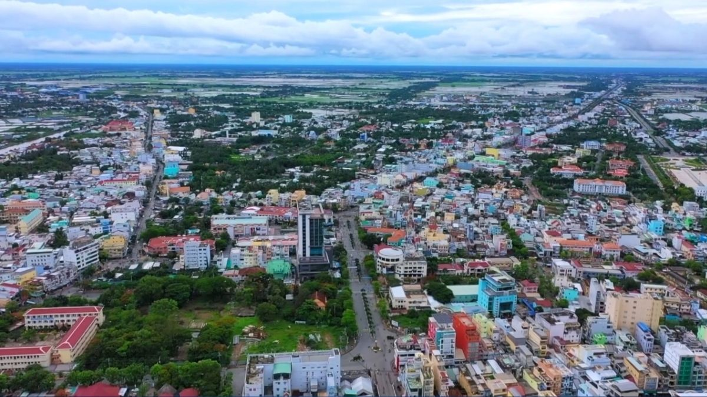
Bạc Liêu là một tỉnh ven biển thuộc vùng Đồng bằng sông Cửu Long, nằm ở phía Nam của Tổ quốc Việt Nam. Tỉnh có vị trí địa lý thuận lợi khi tiếp giáp với các tỉnh Cà Mau, Sóc Trăng, Hậu Giang và Biển Đông, tạo điều kiện quan trọng cho giao lưu kinh tế, phát triển nông nghiệp, thủy sản và kinh tế biển. Với hệ thống sông ngòi, kênh rạch chằng chịt cùng vùng bờ biển dài, Bạc Liêu sở hữu nhiều tiềm năng tự nhiên phục vụ cho sản xuất và phát triển bền vững.
Văn hóa – Con người
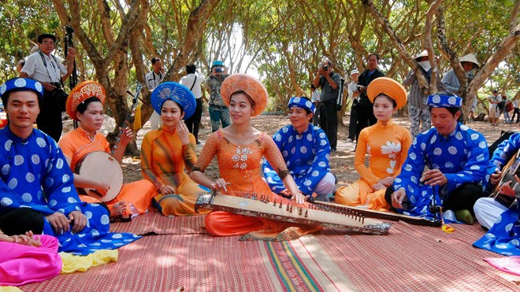
Đờn ca tài tử
Bạc Liêu là vùng đất có lịch sử hình thành lâu đời, gắn liền với quá trình khai phá phương Nam, đồng thời mang đậm bản sắc văn hóa đa dạng của các cộng đồng dân tộc Kinh, Khmer và Hoa. Truyền thống văn hóa đặc sắc của tỉnh được thể hiện qua các lễ hội dân gian, kiến trúc tôn giáo và đặc biệt là nghệ thuật Đờn ca tài tử Nam Bộ, một di sản văn hóa phi vật thể được UNESCO công nhận.
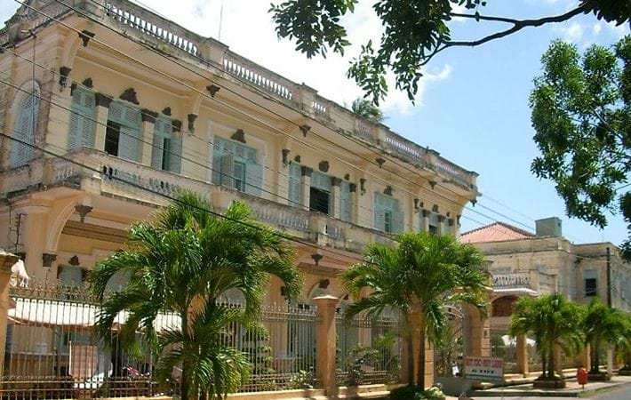
Công tử Bạc Liêu
Bên cạnh đó, Bạc Liêu còn được biết đến là quê hương của Công tử Bạc Liêu – biểu tượng cho một giai đoạn lịch sử và đời sống xã hội đặc thù của Nam Bộ xưa và lối sống hào hoa một thời.
Du lịch nổi bật
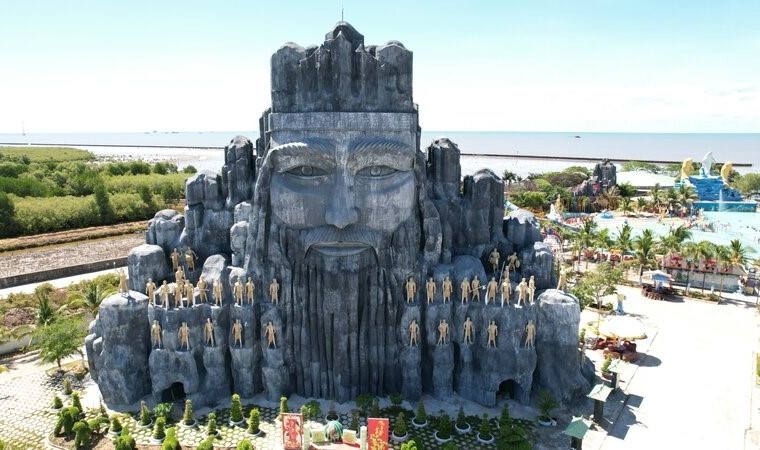
Đây là một bức tượng khổng lồ mô phỏng tượng Lạc Long Quân trong quần thể Khu du lịch Nhà Mát thu hút khách du lịch. Tạo ra một cảnh quan hùng vĩ, mang tính văn hóa lịch sử lâu đời kết hợp với sự đẹp đẽ, bình yên của khu du lịch Nhà Mát góp phần tạo điểm nhấn trong mắt khách quốc tế và khách du lịch trong nước.
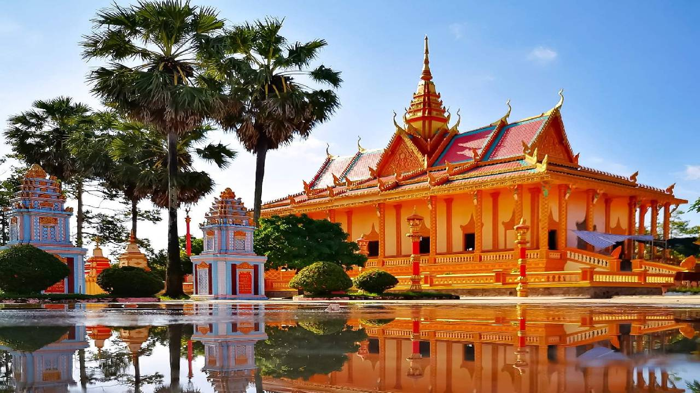
Chùa Xiêm Cán là một trong những ngôi chùa Khmer tiêu biểu và có quy mô lớn nhất tại tỉnh Bạc Liêu, tọa lạc tại xã Hiệp Thành, thành phố Bạc Liêu. Ngôi chùa được xây dựng vào cuối thế kỷ XIX, gắn liền với đời sống tín ngưỡng và sinh hoạt văn hóa của đồng bào Khmer Nam Bộ trong khu vực.
Chùa Xiêm Cán nổi bật với hệ thống kiến trúc bề thế, hài hòa, thể hiện qua mái chùa nhiều tầng, các hoa văn chạm khắc tinh xảo và tượng trang trí mang đậm yếu tố thần thoại, triết lý Phật giáo. Không chỉ là nơi sinh hoạt tôn giáo, chùa còn là trung tâm gìn giữ và truyền bá các giá trị văn hóa, nghệ thuật truyền thống của cộng đồng Khmer tại Bạc Liêu.
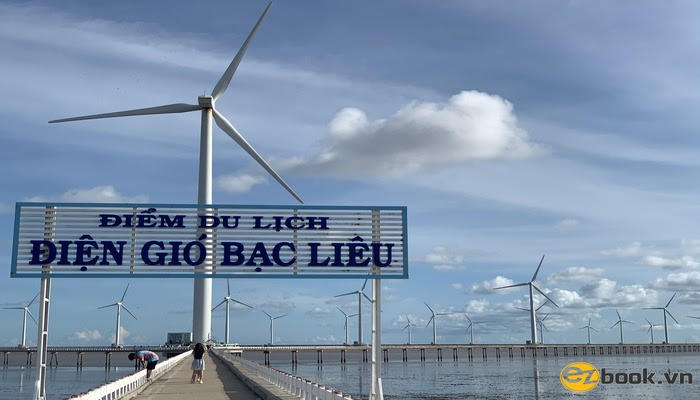
Cánh đồng điện gió Bạc Liêu là một trong những dự án năng lượng tái tạo tiêu biểu của khu vực Đồng bằng sông Cửu Long, tọa lạc tại vùng ven biển thành phố Bạc Liêu. Công trình được xây dựng trên nền biển và bãi bồi ven bờ, với hệ thống trụ tua-bin gió quy mô lớn, đánh dấu bước phát triển quan trọng của tỉnh trong việc khai thác năng lượng sạch, thân thiện với môi trường.
Không chỉ mang ý nghĩa kinh tế và kỹ thuật, cánh đồng điện gió Bạc Liêu còn tạo nên cảnh quan độc đáo giữa không gian biển trời, trở thành điểm tham quan – du lịch đặc sắc của địa phương. Hình ảnh những tua-bin gió vươn cao giữa mặt biển thể hiện sự kết hợp hài hòa giữa phát triển hiện đại và bảo vệ môi trường, góp phần nâng cao hình ảnh Bạc Liêu như một địa phương năng động, hướng đến phát triển bền vững.
Ẩm thực Bạc Liêu
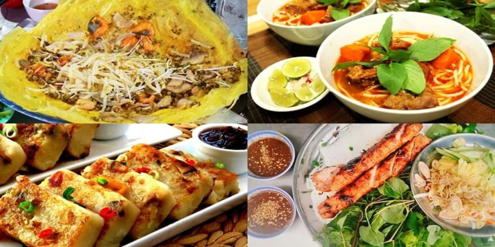
Ẩm thực Bạc Liêu mang đậm hương vị miền Tây với nhiều món ăn dân dã nhưng giàu bản sắc.
Bấm vào để xem chi tiếtLễ hội tiêu biểu
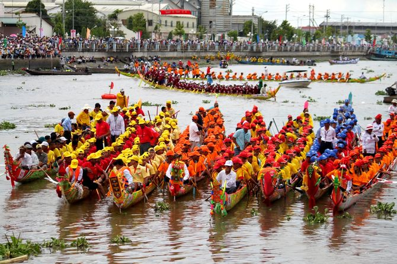
Lễ hội đua ghe Ngo
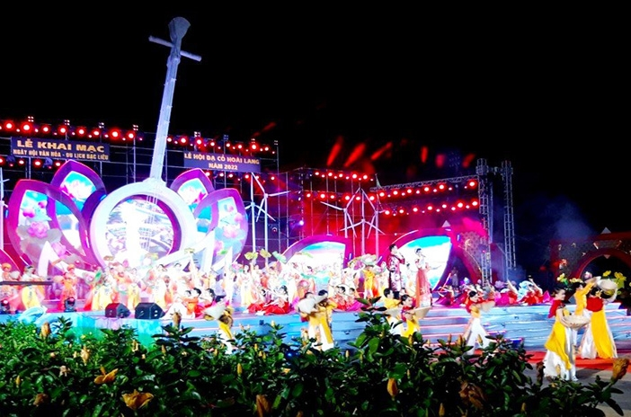
Lễ hội Dạ cổ hoài lang
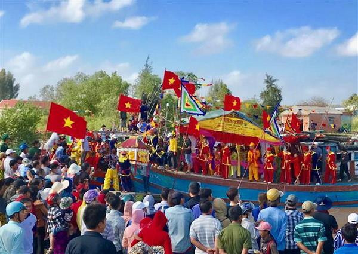
Lễ hội sông nước
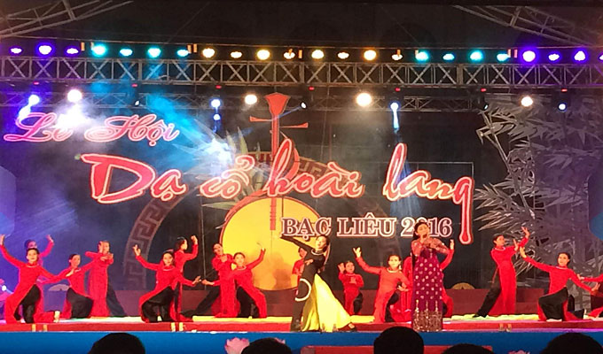
Lễ hội văn hóa dân gian
Các lễ hội ở Bạc Liêu phản ánh đời sống tinh thần phong phú và tín ngưỡng dân gian đặc sắc.
Bấm vào để xem chi tiết